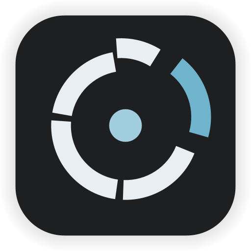
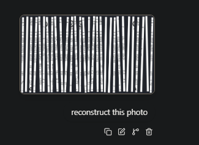
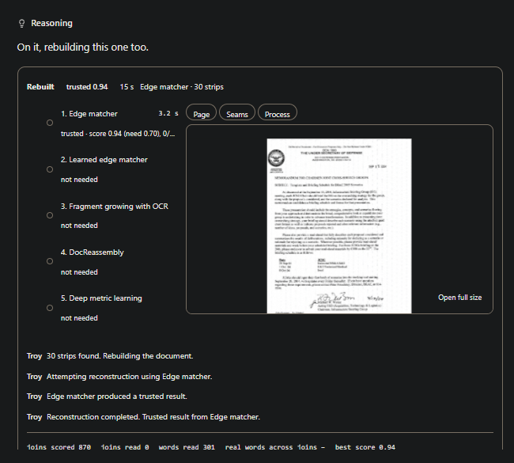

Anasynthe.
Rebuilds a strip-shredded document from photos or scans of the strips. Drop in one image of all the strips (or several images, or the strips as separate files), press Reconstruct, and it hands back the reassembled page or pages, plus a verdict on whether the result can be trusted.
From strips to a page
1. Find the strips
Each input image is separated from its background, split into connected pieces, deskewed, and trimmed of the blurred cut fringe along each edge. A single photo of 30 strips on a desk becomes 30 clean strips.
2. Try methods in order, falling back automatically
Each method proposes an arrangement and the verifier scores it. If it isn't trusted, the next method runs.
- 01Edge matcherCompares the ink along every pair of edges and solves the ordering: exact for 16 strips or fewer, heuristic beyond that. Fast; it handles most clean scans and photos in a few seconds.
- 02Fragment growing with OCRReads candidate joins with Tesseract and merges pairs where real words cross the seam, growing fragments until pages form. Slower, but it reads text rather than pixels.
- 03DocReassembly / DeepRecOptional external tools, used if installed.
3. Multi-page
Tell it how many pages. The solver places the page breaks itself at the most margin-like edges, so two documents shredded together come out as two pages.
4. Verify
The composed page is OCR'd and checked four ways:
- word confidence,
- how many words are in the dictionary,
- whether words crossing each seam read as real words,
- pixel continuity across seams.
Pages must start and end on blank margins. The result is trusted, needs review (with each suspect seam marked), or rejected. A deliberately shuffled page scores about 0.25 against a 0.70 trust threshold.
Watch it work
- A transparent drop area that takes multiple files. Click any thumbnail for a zoomable preview.
- Left: the method queue with live status: waiting, running, trusted, not trusted, failed, skipped.
- Right: the live process view: the strips as they're found, the cost matrix, OCR sheets being read and the verifier's page check, plus counters and a word feed. Restrained, no theatrics.
- A result view with Page, Seams and Process tabs. Suspect seams are highlighted; double-click to open. You can reorder strips by hand and check again.
- An output folder for each run: the pages as PNG, a seams overlay, the extracted text and a JSON report.
Just ask Troy
Say “help reassemble the shredded document”, or drop a photo and say “reconstruct this”, and the skill starts a job.
- Troy's web page shows a card with a drop zone, the page count, and a checkbox to open the real app and watch it work.
- The card follows the job live: the queue, the current frame, narration and counters, then the result with Page, Seams and Process tabs and the text.
- With “open the app” ticked, Troy drives the window and narrates each step aloud: “Attempting reconstruction using Edge matcher… not trusted, reattempting with Fragment growing… completed.”



